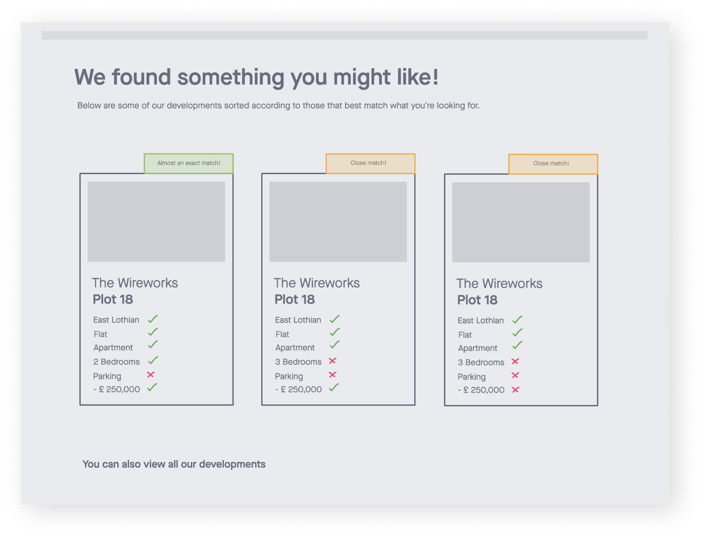
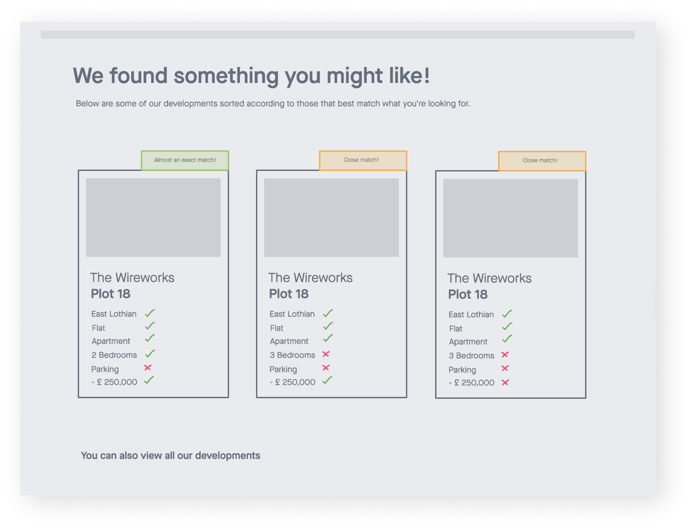
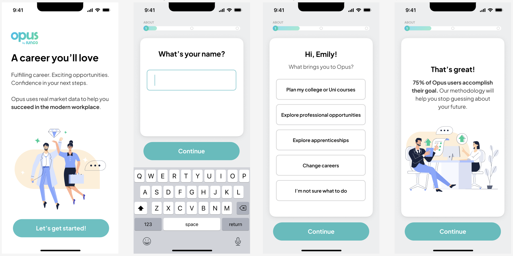
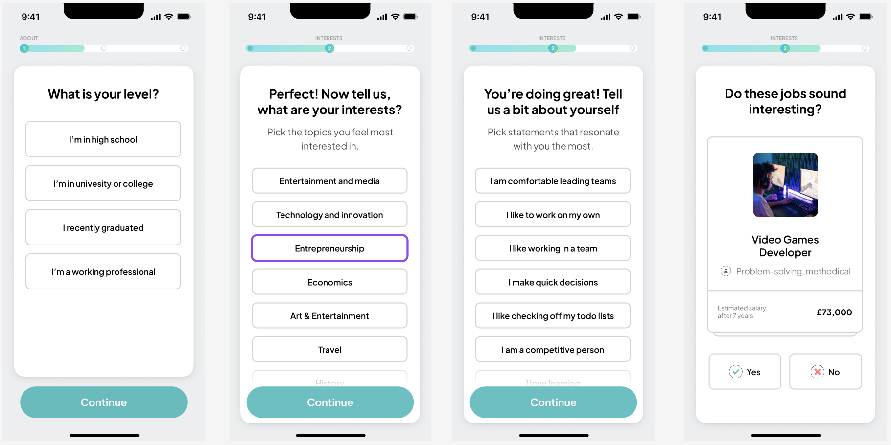
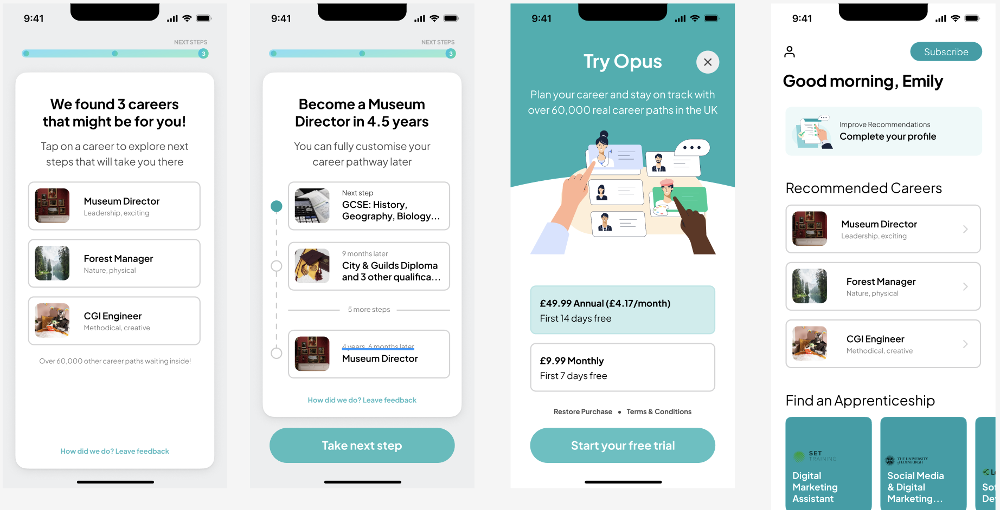

Rethinking Fiverr's ordering process
UX Design
Overview
Fiverr is the fast food giant of the freelancing world, designed to make finding services cheap and easy. Whether it's finding someone to design a logo for your new business or remix your favourite Mozart composition, you'll find them on Fiverr.
Problem
As a Fiverr user myself, I’ve had to face several problematic encounters with buyers on this platform. I would like to focus on those where orders were placed by accident, or the requirements weren’t fulfilled. These situations have led to cancellations that affect my ratings, alteration of my schedule, postponing other clients; orders, and overall, a waste of both mine and the customer’s time. I talked to some fellow sellers and did some desk research to find out that I’m not the only one who has experienced this, and that it's a very common issue.
Objective: My goal was to streamline the ordering process, and therefore help buyers and sellers save time, reduce unpleasant experiences and increase overall user satisfaction.
Process
User Interviews
Starting with a limited scope, I held interviews with both buyers and sellers of Fiverr to better understand the problem space from both perspectives. I asked them about their general impressions of Fiverr, how easy/difficult it was to deal with issues with clients, the outcomes and what it was that they liked/disliked most about interacting with clients on this platform.When speaking with the buyers,. I asked about their requirements and expectations when looking for a particular seller, how they found the ordering process, as well as if they have ever had any negative experiences with sellers.Since I wanted to expand and gain more information, I resorted to desk research, since its easily accessible gather more insights and information to deepen my understanding of the overall situation.I learned valuable information from the people I met with and gained a better understanding of the underlying issues of Fiverr's ordering system. I gathered what I thought were the most useful responses from the interviews and put them together to better visualize the issues users are encountering.
 

Day 1
We started the week off with a workshop that helped us to identify the problems, set the desired outcomes and generate solutions. All members of the Lungo and Lumi teams contributed during this stage in the process with many creative ideas that helped us figure out what their vision was and what tools could help them fulfil it

What they wanted to achieve long-term: One million people would plan their careers with Opus.
Two main issues: They were trying to target too many different client groups and didn’t know how to price the product.
Solution: We would design a mobile-first product with an iOS/Android subscription as opposed to the web app.
Day 2
On the second day, we dived into research and performed competitor analysis to gain a deeper insight into the market which allowed us to expand on the solutions we proposed the previous day. We chose several examples that served as inspiration and from there began to define what features the app would have.

One of the biggest issues we discovered was that the skill tests that many career advice platforms offer, to determine a persons career options, take too long to complete and generate unreliable results. Having gained this insight, I proposed to integrate a short but personalised career test into the onboarding process. This idea was welcomed by the clients and the design lead and implemented in the wireframes. With just a few questions to help us understand the users goals and skills, a user would be able to test what OPUS can do for them before considering a subscription.
Day 3
We dedicated the thrid day entirely to wireframing and prototyping the oboarding process as well as the dashboard.

We designed the onboarding process to be as simple and welcoming as possible by firstly limiting the questions presented to the user to only five, adding encouraging messages along the way and providing a progress tracker to reduce user frustration and the likelihood of abandonment. Having a portion of the career test at this stage allows us to start understanding the user from the moment they open the app and by the time they're finished, we would already have an idea of the kind of career paths that might interest them. After this brief demonstration of what Opus can offer, the user is offered a monthly or yearly subscription in order to access the app. Once they choose a plan they will be welcomed to the dashboard page where they can finish completing their profile and start exploring careers. Once the wireframe was approved by the clients, we completed the prototype
  